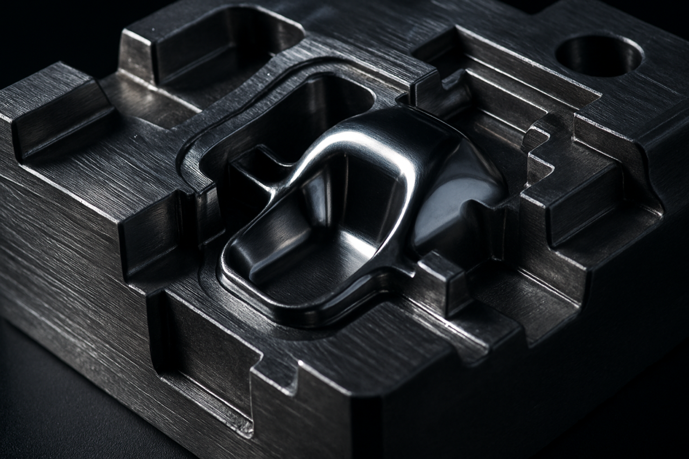

Why Mold Making Is the Most Important Decision You'll Make
Your mold is the foundation of everything. Get it right and your parts come out consistent, your cycle times are fast, and your costs stay predictable. Get it wrong and you're chasing quality problems for the life of the program — paying for modifications, fighting with warped parts, dealing with short shots or flash you can't get rid of.
The mold isn't just a piece of metal. It's a precision tool that needs to work perfectly under thousands of pounds of pressure, hundreds of degrees of heat, and millions of cycles. Every design decision made when the mold is being built — gate location, cooling channel layout, draft angles, venting — will show up in your parts for as long as that mold runs.
So before you commission tooling, it pays to understand what you're actually buying.
Step 1: Design for Manufacturability (DFM) — Before Anything Gets Cut
The single biggest mistake companies make when commissioning molds is rushing into machining without a proper DFM review. DFM — Design for Manufacturability — is the process of analyzing your part design specifically for how it will behave in a mold.
A good DFM review catches issues like:
- Insufficient draft angles — parts that won't eject cleanly, leaving drag marks or sticking to the core
- Inconsistent wall thickness — thick sections that sink, warp, or won't pack out properly
- Undercuts — geometry that physically can't be ejected without a side action or lifter (which adds cost and complexity)
- Poor gate location — gates placed where they'll leave visible marks on cosmetic surfaces or create weld lines in structural areas
- Venting problems — trapped air that causes burn marks, short shots, or surface defects
At Ace's, every mold quote comes with a DFM review. We'd rather spend 30 minutes catching a wall thickness issue upfront than spend 30 hours reworking a mold because the parts sink. This is the kind of thing that only happens when the mold builder and the molder are the same team — we're thinking about how that part is going to run from day one.
Step 2: Choosing Your Tooling Material — Aluminum vs. Steel
One of the first decisions in any mold project is what material to build the tool from. This isn't one-size-fits-all — it depends on your volumes, your resin, your surface finish requirements, and your timeline.
Aluminum Molds
Aluminum tooling — typically 7075 or 6061 alloy — is the right call for prototype validation and low-to-mid volume production. It machines faster than steel (which means lower cost and shorter lead times), transfers heat efficiently (faster cycle times), and is easier to modify if your design changes after first articles.
The tradeoff: aluminum is softer. High-abrasion resins like glass-filled nylon will wear cavity surfaces faster. For most engineering thermoplastics at volumes under 100,000 shots, aluminum is excellent. For cosmetic parts requiring a mirror polish, aluminum holds up well too — it just won't last forever at very high volumes.
Typical lead time: 2–4 weeks. Best for: prototypes, bridge production, design validation, low-volume runs.
Steel Molds
P20 pre-hardened steel is the workhorse of production tooling. It machines well, polishes to a high gloss, welds cleanly for repairs, and handles most standard thermoplastics for millions of cycles. H13 tool steel — harder and more heat-resistant — is the choice when you're running abrasive resins (glass fill, mineral fill, flame retardants), high-temperature materials, or parts demanding extremely tight dimensional tolerances over a long production life. For a detailed comparison of these two steels, read our guide on P20 vs H13 mold steel selection.
Steel molds cost more and take longer to build, but for production volumes in the hundreds of thousands or millions, they're the only logical choice. The per-part amortization makes the upfront cost irrelevant.
Typical lead time: 4–8 weeks. Best for: high-volume production, abrasive resins, tight tolerance parts, long-life programs.
3D Printed Molds
This one surprises people. We operate high-temperature resin 3D printers capable of producing molds that can actually run real thermoplastic parts — polypropylene, ABS, TPE, and similar materials. These tools are ready in days (sometimes 24–48 hours), cost a fraction of metal tooling, and are perfect for concept validation before you invest in aluminum or steel.
They won't last long — expect 50 to a few hundred shots before the cavity degrades — but for a first-article check or a 50-piece pilot run, they're a game changer. No other mold shop on Long Island offers this.
Step 3: The Mold Build — What's Actually Happening in the Shop
Once design is approved and material is selected, the mold enters machining. Here's what happens:
- Mold base selection — Standard mold bases (DME, National, etc.) are purchased or blanks are cut from solid billet. Standard bases save lead time; custom bases are used for tight envelope constraints.
- CNC roughing — The bulk of the cavity and core material is removed with high-feed roughing passes. Speed matters here — efficient roughing cuts days off the schedule.
- CNC finishing — Tight-tolerance finishing passes bring the cavity to near-final dimensions. Complex 3D surfaces require 3-axis or multi-axis contouring.
- EDM (if required) — Electrical Discharge Machining is used for sharp inside corners, deep ribs, and fine detail that a rotating cutter can't reach. EDM is slower but produces features that are otherwise impossible.
- Benching and polishing — A skilled mold maker hand-finishes the cavity to the required surface texture. Class A cosmetic surfaces are hand-polished to a mirror. Textured surfaces may go out for acid etching.
- Assembly — Ejector pins, return pins, cooling plugs, gate bushings, and all hardware are assembled. The mold is checked for proper fit and function before it ever sees a press.
- First article sampling — The mold goes in the press. First shots are pulled, measured, and inspected. Adjustments are made until the parts are within spec.
Because all of this happens in our shop in Bohemia, you're not waiting on a mold shop in another state — or another country — to ship a tool back to us. Every iteration is faster when the mold never leaves the building.
Step 4: First Articles and Approval
First article parts are the first real test of whether the mold design works. We pull samples, measure critical dimensions against your print, and document the results. If something is off — a dimension is out, a cosmetic surface isn't right, an ejector pin is leaving a mark you don't like — we fix it before production starts.
This is where having mold making and molding under one roof really pays off. When a part is short-shooting, we can check the mold, the process, and the resin all at the same time, in the same building, with the same team. There's nobody to point fingers at.
Common Mistakes to Avoid When Commissioning Tooling
- Going offshore for cost savings. Chinese tooling can look attractive on paper. In practice, you'll wait 10–14 weeks, receive a mold that may not match your drawing, and then spend months in revision cycles — all while your launch date slips. For most Long Island and New York manufacturers, local tooling is faster, cheaper in total cost, and far less stressful.
- Skipping the DFM review. Every dollar you spend on DFM saves ten in mold rework. Don't skip it.
- Under-specifying steel grade. Using P20 for a glass-filled nylon part will cost you — the cavity will wear fast and your part dimensions will drift. Match the steel to the resin.
- Ignoring cooling. Mold cooling design directly affects cycle time and warpage. A poorly cooled mold can cost you 20–40% of your throughput. This is an engineering decision, not an afterthought.
- Choosing the lowest bid without understanding scope. Mold quotes vary wildly based on what's included. Make sure your quote covers first article sampling, any agreed revisions, and documentation. A low quote that doesn't include sampling isn't really a low quote.
What Does a Custom Injection Mold Cost?
Mold pricing is highly project-specific, but here are realistic ballparks for the Long Island/New York market. For a deeper dive into all injection molding costs — including per-part pricing and cost-saving strategies — see our complete injection molding cost guide:
- Simple single-cavity aluminum prototype mold: $2,500 – $8,000
- Mid-complexity single-cavity aluminum production mold: $8,000 – $20,000
- Single-cavity steel production mold: $15,000 – $40,000+
- Multi-cavity steel mold (2–4 cavities): $25,000 – $75,000+
- 3D printed bridge mold: $500 – $2,500
Factors that drive cost up: part complexity, number of side actions or lifters, surface finish requirements, cavity count, steel grade, and tight tolerances. Factors that keep cost down: simple geometry, good draft, generous wall tolerances, and aluminum construction.
The best way to get an accurate number is to send us your STEP file. We'll review it and get you a real quote — usually within 24–48 hours. Want to understand the full timeline? Read our breakdown of injection molding lead times from design to delivery.
Why Work with a Long Island Mold Maker?
If you're in New York — Long Island, NYC metro, or anywhere in the tri-state area — there are real advantages to working with a local mold shop:
- You can visit the shop. Walk the floor, see your mold being built, meet the people who are making it. That relationship matters.
- No freight risk. Shipping a steel mold across the country (or across an ocean) is expensive and introduces risk. Local means you can pick it up or we can deliver it.
- Faster turnaround on changes. Need a gate modification after first article? A local shop can have it done in a day or two. A shop in another state takes a week. An overseas shop takes a month.
- One shop for mold and molding. At Ace's, your mold and your parts are made in the same building. That's a level of accountability and speed that a geographically separated mold shop and molder simply can't match.
Ready to Build Your Mold?
Send us your STEP file or describe your project. We'll review it and send you a DFM analysis and quote within 24–48 hours. No overseas hand-offs. No surprises.